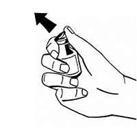
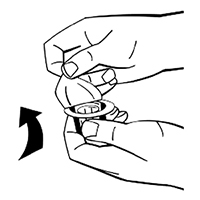
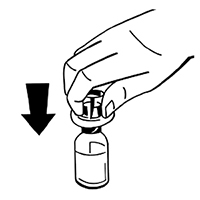
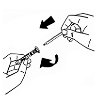
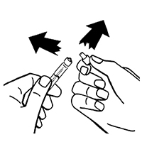
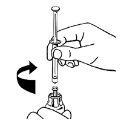
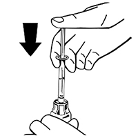
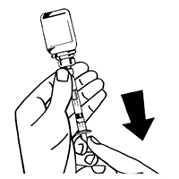

|
 |
| НУВИК (NUWIQ) simoctocog alfa лиофилизат д/пригот. р-ра д/в/в введения | |||||||||||||||||||||||||||||||||||||||||||||||||||||||||||||||||||||||||||||||||||||||||||||||||||||||||||||||||||||||||||||||||||||||||||||||||||||||||||||||||||||||||||||||||
|
Клинико-фармакологическая группа: Фактор свертывания крови VIII человеческий рекомбинантный Номер и дата регистрации: ЛП-003522 от 24.03.16 Код ATX: B02BD02 |
Владелец регистрационного удостоверения: зарегистрировано и произведено Представительство: | ||||||||||||||||||||||||||||||||||||||||||||||||||||||||||||||||||||||||||||||||||||||||||||||||||||||||||||||||||||||||||||||||||||||||||||||||||||||||||||||||||||||||||||||||
Форма выпуска, состав и упаковка Лиофилизат для приготовления раствора для в/в введения в виде массы белого цвета, возможно наличие небольшого количества порошка белого цвета; восстановленный раствор - прозрачный или слегка опалесцирующий бесцветный раствор.
Вспомогательные вещества: натрия хлорид - 45 мг, сахароза - 13.5 мг, аргинина гидрохлорид - 13.5 мг, кальция хлорида дигидрат - 0.75 мг, полоксамер 188 - 3 мг, натрия цитрата дигидрат - 3 мг. Растворитель: вода для инъекций 2.5 мл в шприце. 250 МЕ - флаконы прозрачного бесцветного стекла (1) в комплекте с растворителем (1 шприц в блистерной упаковке), 1 адаптером для флакона в блистерной упаковке, 1 системой для введения ("игла-бабочка") в блистерной упаковке, 2 дезинфицирующими салфетками в индивидуальных герметичных упаковках - пачки картонные с вставкой. Лиофилизат для приготовления раствора для в/в введения в виде массы белого цвета, возможно наличие небольшого количества порошка белого цвета; восстановленный раствор - прозрачный или слегка опалесцирующий бесцветный раствор.
Вспомогательные вещества: натрия хлорид - 45 мг, сахароза - 13.5 мг, аргинина гидрохлорид - 13.5 мг, кальция хлорида дигидрат - 0.75 мг, полоксамер 188 - 3 мг, натрия цитрата дигидрат - 3 мг. Растворитель: вода для инъекций 2.5 мл в шприце. 500 МЕ - флаконы прозрачного бесцветного стекла (1) в комплекте с растворителем (1 шприц в блистерной упаковке), 1 адаптером для флакона в блистерной упаковке, 1 системой для введения ("игла-бабочка") в блистерной упаковке, 2 дезинфицирующими салфетками в индивидуальных герметичных упаковках - пачки картонные с вставкой. Лиофилизат для приготовления раствора для в/в введения в виде массы белого цвета, возможно наличие небольшого количества порошка белого цвета; восстановленный раствор - прозрачный или слегка опалесцирующий бесцветный раствор.
Вспомогательные вещества: натрия хлорид - 45 мг, сахароза - 13.5 мг, аргинина гидрохлорид - 13.5 мг, кальция хлорида дигидрат - 0.75 мг, полоксамер 188 - 3 мг, натрия цитрата дигидрат - 3 мг. Растворитель: вода для инъекций 2.5 мл в шприце. 1000 МЕ - флаконы прозрачного бесцветного стекла (1) в комплекте с растворителем (1 шприц в блистерной упаковке), 1 адаптером для флакона в блистерной упаковке, 1 системой для введения ("игла-бабочка") в блистерной упаковке, 2 дезинфицирующими салфетками в индивидуальных герметичных упаковках - пачки картонные с вставкой. Лиофилизат для приготовления раствора для в/в введения в виде массы белого цвета, возможно наличие небольшого количества порошка белого цвета; восстановленный раствор - прозрачный или слегка опалесцирующий бесцветный раствор.
Вспомогательные вещества: натрия хлорид - 45 мг, сахароза - 13.5 мг, аргинина гидрохлорид - 13.5 мг, кальция хлорида дигидрат - 0.75 мг, полоксамер 188 - 3 мг, натрия цитрата дигидрат - 3 мг. Растворитель: вода для инъекций 2.5 мл в шприце. 2000 МЕ - флаконы прозрачного бесцветного стекла (1) в комплекте с растворителем (1 шприц в блистерной упаковке), 1 адаптером для флакона в блистерной упаковке, 1 системой для введения ("игла-бабочка") в блистерной упаковке, 2 дезинфицирующими салфетками в индивидуальных герметичных упаковках - пачки картонные с вставкой. | |||||||||||||||||||||||||||||||||||||||||||||||||||||||||||||||||||||||||||||||||||||||||||||||||||||||||||||||||||||||||||||||||||||||||||||||||||||||||||||||||||||||||||||||||
| |||||||||||||||||||||||||||||||||||||||||||||||||||||||||||||||||||||||||||||||||||||||||||||||||||||||||||||||||||||||||||||||||||||||||||||||||||||||||||||||||||||||||||||||||
Описание препарата основано на официально утвержденной инструкции по применению и утверждено компанией-производителем для издания 2021 г. | |||||||||||||||||||||||||||||||||||||||||||||||||||||||||||||||||||||||||||||||||||||||||||||||||||||||||||||||||||||||||||||||||||||||||||||||||||||||||||||||||||||||||||||||||
Фармакологическое действие |
Фармакокинетика |
Показания |
Режим дозирования |
Побочное действие |
Противопоказания |
Беременность и лактация |
Особые указания |
Передозировка |
Лекарственное взаимодействие |
Условия хранения и сроки годности |
Условия реализации
Фармакологическое действие
Симоктоког альфа, фактор свертывания крови VIII человеческий (рДНК), представляет собой высокоочищенный протеин, состоящий из 1440 аминокислот. Последовательность аминокислот сравнима с таковой фактора свертывания VIII (фактор VIII) из плазмы человека, состоящего их двух цепей с молекулярной массой 90 кДа и 80 кДа и не содержащего В-домен. Препарат получают при помощи технологии рекомбинантной ДНК из клеточных линий эмбриональной почки человека (НЕК 293F клетки). Никакие вещества человеческого или животного происхождения в процессе производства и в готовый препарат не добавляются. Посттрансляционные модификации препарата Нувик аналогичны таковым в эндогенном факторе VIII у здоровых людей, и в отличие от препарата из клеточных линий хомячка препарат рекомбинантного фактора VIII из клеточных линий человека не имеет карбогидратных эпитопов, обладающих антигенными свойствами. Комплекс фактор VIII/фактор Виллебранда состоит из двух молекул (фактор VIII и фактор Виллебранда) с различными физиологическими функциями. При введении пациентам с гемофилией фактор VIII связывается с фактором Виллебранда в кровеносном русле. Активированный фактор VIII действует как ко-фактор для активированного фактора IX, ускоряя превращение фактора X в активированный фактор X. Активированный фактор X превращает протромбин в тромбин. Затем тромбин превращает фибриноген в фибрин, при этом может сформироваться тромб. Гемофилия А - это связанное с полом наследственное нарушение свертывания крови, связанное со снижением уровня фактора VIII и приводящее к профузным кровотечениям в суставы, мышцы или внутренние органы, как спонтанным, так и в результате случайных травм или хирургических вмешательств. При проведении заместительной терапии достигается временная коррекция дефицита фактора VIII в плазме и коррекция кровотечений. Иммуногенность препарата Нувик изучалась в клинических исследованиях, в которых приняли участие 135 пациентов с тяжелой гемофилией А, ранее получавших лечение (74 взрослых и 61 ребенок). Ни у одного из пациентов появление ингибиторов не наблюдалось. В клиническом исследовании с участием 32 взрослых пациентов с тяжелой гемофилией А среднее потребление препарата Нувик в целях профилактики составило 468.7 МЕ/кг в месяц. Средняя доза для лечения острых кровотечений была 33.0 МЕ/кг для пациентов, получавших Нувик в профилактических целях. В другом клиническом исследовании 22 взрослых пациента получали лечение при необходимости. Всего 986 случаев кровотечений потребовали лечения со средней дозой 30.9 МЕ/кг. В целом малые кровотечения требуют применения несколько меньших доз препарата, а более тяжелые кровотечения требуют введения препарата в дозах, вплоть до трех раз превышающих средние дозы препарата. Фармакодинамика у детей Данные были получены от 29 ранее получавших лечение детей в возрасте от 2 до 5 лет, 31 в возрасте от 6 до 12 лет и одного старше 14 лет. Средняя доза профилактических инфузий составила 37.8 МЕ/кг. Двадцать пациентов получали среднюю дозу более 45 МЕ/кг. Среднее потребление препарата Нувик в целях профилактики составило 521.9 МЕ/кг в месяц. Исследования показали, что для лечения кровотечений у детей средняя доза препарата Нувик (43.9 МЕ/кг) выше, чем у взрослых (33.0 МЕ/кг), а также что средняя доза, необходимая для остановки от средних до сильных кровотечений, выше чем для слабых кровотечений (78.2 МЕ/кг против 41.7 МЕ/кг). Для детей младшего возраста в основном требуется большая средняя доза (6-12 лет: 43.9 МЕ/кг, 2-5 лет: 52.6 МЕ/кг). Фармакокинетика
Таблица 1. Фармакокинетика препарата Нувик (50 МЕ/кг) у взрослых в возрасте от 18 до 65 лет с тяжелой формой гемофилии А, ранее получавших лечение (n=20)
Таблица 2. Фармакокинетика препарата Нувик (50 МЕ/кг) у детей в возрасте от 6 до 12 лет с тяжелой формой гемофилии А, ранее получавших лечение (n=12)
Таблица 3. Фармакокинетика препарата Нувик (50 МЕ/кг) у детей в возрасте от 2 до 5 лет с тяжелой формой гемофилии А, ранее получавших лечение (n=13)
AUC = площадь под кривой (FVIII:C), Т1/2 = период полувыведения, IVR = восстановление фактора in vivo, CL = клиренс, СО = стандартное отклонение. Фармакокинетика у детей В соответствии с литературными данными время восстановления и Т1/2 несколько меньше у детей, чем у взрослых, в то же время клиренс препарата у детей выше, что может быть связано с известным фактом, что у детей объем плазмы на килограмм массы тела выше, чем у взрослых. Разделение на подгруппы по массе тела Таблица 4. Фармакокинетика препарата Нувик (50 МЕ/кг) в зависимости от массы тела у взрослых в возрасте от 18 до 65 лет с тяжелой формой гемофилии А, ранее получавших лечение (n=20)
Нормальная масса тела: ИМТ 18.5-25 кг/м2 Показания
Нувик может применяться у всех возрастных групп пациентов. Режим дозирования
Лечение должно проводиться врачом, имеющим опыт лечения пациентов с гемофилией. Препарат вводят в/в после растворения в прилагаемом растворителе (вода для инъекций). Следует использовать только прилагаемые приспособления для растворения и введения, т.к. вследствие адсорбции фактора VIII на внутренней поверхности любых других контейнеров и устройств для проведения инъекции лечение может быть неэффективным. Скорость введения раствора не должна превышать 4 мл/мин. Доза и длительность проведения заместительной терапии зависят от степени дефицита фактора VIII, локализации и тяжести кровотечения, а также от объективного состояния пациента. Количество единиц фактора VIII в препарате выражается в Международных Единицах (МЕ), установленных действующим стандартом ВОЗ для препаратов фактора VIII. Активность фактора VIII в плазме выражается в процентах (относительно содержания фактора VIII в нормальной человеческой плазме) или в МЕ (относительно Международного Стандарта фактора VIII). 1 ME активности фактора VIII эквивалентна содержанию фактора VIII в 1 мл нормальной человеческой плазмы. Режим терапии "по требованию" Расчет требуемой дозы основан на эмпирически полученных результатах, согласно которым 1 МЕ фактора VIII/кг массы тела повышает уровень активности фактора VIII в плазме примерно на 2% от нормальной активности (или 2 МЕ/дл). Расчет требуемой дозы проводят по формуле:
Дозы и частота применения препарата всегда должны быть ориентированы на достижение клинического эффекта в каждом индивидуальном случае. В случае последующих кровотечений уровень активности фактора VIII не должен уменьшаться ниже заданного уровня активности в плазме (% от нормального содержания) в соответствующий период времени. Таблица ниже может быть использована в качестве ориентира для выбора доз при различных кровотечениях и хирургических вмешательствах. Таблица 5. Рекомендуемые дозы препарата Нувик при различных видах кровотечений и хирургических вмешательствах
Режим терапии "профилактика" Для длительной профилактики кровотечений у пациентов с тяжелой формой гемофилии А средняя доза фактора VIII составляет 20-40 МЕ/кг массы тела с интервалами в 2-3 дня. В некоторых случаях, особенно у более молодых пациентов, может возникнуть необходимость сокращения промежутка между введениями или же повышения дозы. Во время курса лечения рекомендуется определять уровень фактора VIII с целью коррекции дозы и частоты повторных введений. В случае больших хирургических вмешательств необходим тщательный мониторинг заместительной терапии путем контроля свертываемости крови (активность фактора VIII в плазме). Ответ на лечение может быть разным у отдельных пациентов, что свидетельствует о различиях в периоде полувыведения и восстановления. Пациенты, ранее не получавшие лечения Информация о безопасности и эффективности препарата Нувик у пациентов, ранее не получавших лечение, на данный момент отсутствует. Применение у детей Применение препарата у детей соответствует таковому у взрослых, однако для детей могут потребоваться более короткие интервалы введения или более высокие дозы. Подготовка препарата к введению Лиофилизат разводят с помощью прилагаемого растворителя (2.5 мл воды для инъекций) и приспособлений для растворения и введения. Раствор после восстановления должен быть бесцветным, прозрачным или слегка опалесцирующим, pH от 6.5 до 7.5. Восстановленный препарат используют немедленно. Инструкция по приготовлению и введению 1. Довести шприц с растворителем (вода для инъекций) и закрытый флакон с лиофилизатом до комнатной температуры. Можно согреть их в руке. Не использовать никаких других способов нагревания. Следует поддерживать комнатную температуру препарата в процессе восстановления. 2. Удалить пластиковую flip-off крышку с флакона с лиофилизатом. Не снимать алюминиевый колпачок и не извлекать резиновую пробку.  3. Протереть верх флакона дезинфицирующей спиртовой салфеткой. Дать спирту высохнуть. 4. Удалить бумажное покрытие с упаковки адаптера для флакона. Не вынимать адаптер из упаковки.  5. Поставить флакон с лиофилизатом на ровную поверхность и удерживать его. Поместить упаковку с адаптером острием вниз по центру резиновой пробки. Надавить на адаптер с усилием, чтобы игла проткнула пробку. Когда адаптер займет нужное положение, раздастся щелчок.  6. Снять бумажное покрытие с упаковки шприца. Следует держать шток поршня за конец и не трогать штифт. Вставить шток поршня концом с резьбой в поршень шприца с растворителем. Поворачивать шток поршня по часовой стрелке, пока не почувствуется легкое сопротивление.  7. Отломить пластиковый колпачок с индикацией вскрытия от шприца с растворителем по перфорации колпачка. Не следует дотрагиваться до внутренней части колпачка или открывшегося конца шприца. Если раствор не будет сразу же использован, необходимо закрыть шприц пластиковым колпачком на время хранения.  8. Снять упаковку с адаптера для флакона и поместить в контейнер для отходов. 9. Надежно соединить шприц с растворителем с адаптером для флакона, поворачивая по часовой стрелке, пока не почувствуется сопротивление.  10. Нажимая на шток поршня, осторожно ввести растворитель во флакон с лиофилизатом.  11. Не извлекая шприц, следует осторожно вращать флакон или двигать по кругу до полного растворения лиофилизата. Не встряхивать флакон. 12. Перед введением обязательно осмотреть раствор на предмет наличия частиц и изменения цвета. Раствор должен быть прозрачным и бесцветным. Не следует использовать мутный раствор или раствор, в котором есть частицы. 13. Перевернуть флакон с присоединенным шприцем вверх дном и медленно ввести раствор обратно в шприц. Необходимо убедиться, что все содержимое флакона перенесено в шприц.  14. Отсоединить заполненный шприц от адаптера флакона, поворачивая его против часовой стрелки, пустой флакон поместить в контейнер для отходов. 15. Раствор в шприце готов для введения. Не хранить в холодильнике после разведения. Приготовленный раствор после разведения следует использовать немедленно. 16. Очистить место введения одной из прилагающихся дезинфицирующих салфеток. 17. Подсоединить к шприцу прилагающуюся систему для введения (иглу-бабочку). Ввести иглу-бабочку в выбранную вену. При использовании жгута для облегчения введения в вену иглы перед введением раствора необходимо снять жгут. Следует следить за тем, чтобы кровь не попала внутрь шприца, чтобы исключить риск образования фибриновых сгустков. 18. Медленно ввести раствор в вену (со скоростью не более 4 мл/мин). Если планируется использовать несколько флаконов с препаратом для одной процедуры введения, можно использовать ту же иглу для введения восстановленного препарата из других флаконов. Адаптер флакона и шприц предназначены только для одноразового использования. Неиспользованный препарат или отходы следует утилизировать в соответствии с существующими правилами. Побочное действие
Общая характеристика профиля безопасности Гиперчувствительность или аллергические реакции (которые могут включать ангионевротический отек, жжение и зуд в месте введения препарата, озноб, покраснение лица, генерализованную крапивницу, головную боль, локальную крапивницу, гипотензию, заторможенность, тошноту, беспокойство, тахикардию, чувство стеснения в груди, звон в ушах, рвоту, свистящее дыхание) при применении препаратов фактора VIII наблюдались редко, но в некоторых случаях прогрессировали с развитием тяжелой анафилаксии (включая шок). В ходе клинических исследований применения препарата Нувик у получавших предшествующее лечение детей (от 2 до 11 лет, n=58), подростков (от 12 до 17 лет, n=3) и взрослых пациентов (n=74) с тяжелой формой гемофилии А в общей сложности было зарегистрировано 8 нежелательных реакций (НЛР) (6 у взрослых и 2 у детей) у 5 пациентов (3 взрослых и 2 ребенка). У подростков НЛР не наблюдались. Общее число пациентов в исследованиях составляло 135. Таблица 6. Сведения о частоте нежелательных реакций в клинических исследованиях у пациентов с тяжелой формой гемофилии А, получавших предшествующее лечение
* Все перечисленные нежелательные реакции возникали однократно. Описание отдельных нежелательных реакций Не-нейтрализующие антитела к фактору VIII определялись у одного взрослого пациента. Тест выполнялся в центральной лаборатории при восьми разведениях. Результат был положительным только при коэффициенте разбавления 1, при этом титр антител был очень низким. Ингибирующая активность по данным модифицированного теста Бетезда не определялась. Клиническая эффективность и восстановление активности препарата Нувик in vivo у данного пациента не изменялись. Применение у детей Предполагается, что частота, тип и степень тяжести нежелательных реакций у детей сходны с данными показателями у взрослых. Противопоказания
Применение при беременности и кормлении грудью
Поскольку гемофилия А редко наблюдается у женщин, опыт лечения фактором VIII во время беременности и кормления грудью отсутствует. Поэтому Нувик следует применять при беременности и в период грудного вскармливания только при наличии абсолютных показаний. Особые указания
Гиперчувствительность Как и при применении любого белкового препарата для в/в введения возможно развитие аллергических реакций гиперчувствительности. Нувик содержит следы человеческих белков хозяина, отличных от фактора VIII. При появлении симптомов реакции гиперчувствительности пациенту следует немедленно прекратить применение препарата и обратиться к врачу. Пациенты должны быть проинформированы о ранних признаках реакций гиперчувствительности, включая аллергическую сыпь, генерализованную крапивницу, чувство стеснения в груди, свистящее дыхание, гипотензию и анафилаксию. В случае развития шока следует проводить стандартное лечение. Ингибиторы Образование нейтрализующих антител (ингибиторов) к фактору VIII является известным осложнением при лечении пациентов с гемофилией А. Обычно этими ингибиторами являются направленные против прокоагулянтной активности фактора VIII иммуноглобулины IgG, содержание которых определяется в модифицированных единицах Бетезда (BU) на мл плазмы с использованием модифицированного метода. Риск появления ингибиторов коррелирует с количеством раз (дней) введения фактора VIII и наиболее высок в течение первых 20 дней введения. В редких случаях ингибиторы могут появиться после первых 100 дней введения. Случаи рецидивирующего появления ингибиторов (с низким титром) наблюдались после перехода с лечения одним препаратом фактора VIII на лечение другим препаратом фактора VIII у пациентов, ранее получавших препарат (введение более 100 дней), у которых отмечалось появление ингибиторов в анамнезе. Поэтому рекомендуется проводить тщательное наблюдение за пациентами на предмет появления ингибиторов после перехода с одного препарата фактора VIII на другой. В целом состояние пациентов, получающих лечение препаратами фактора VIII, следует тщательно мониторировать на предмет появления ингибиторов путем соответствующего клинического наблюдения и проведения лабораторных тестов (необходимо периодически определять уровень активности фактора VIII). Если ожидаемый уровень активности фактора VIII в плазме не достигнут, или если при применении адекватной дозы не удается контролировать кровотечение, необходимо выполнить соответствующий анализ для выявления ингибиторов фактора VIII. У пациентов с высоким уровнем ингибиторов лечение фактором VIII может быть неэффективным, при этом необходимо рассмотреть вопрос о применении альтернативных методов лечения (например, индукция иммунной толерантности). Лечение таких пациентов должен проводить врач, имеющий опыт лечения гемофилии при наличии ингибиторов к фактору VIII. Осложнения, связанные с применением катетера При необходимости применения устройства для центрального венозного доступа следует учитывать риск осложнений, связанных с его применением, в т.ч. местные инфекции, бактериемию и тромбоз в месте введения катетера. При каждом введении препарата Нувик пациенту настоятельно рекомендуется регистрировать название препарата и номер серии для того, чтобы можно было проследить связь состояния пациента с введением препарата конкретной серии. Применение у детей Приведенные выше указания в одинаковой степени относятся как к взрослым, так и к детям. Ограничения, связанные с вспомогательными веществами В одном флаконе препарата содержится < 1 ммоль (23 мг) натрия. Однако в зависимости от массы тела и показаний пациент может применять более одного флакона препарата. Это следует учитывать пациентам, придерживающимся диеты с ограничением содержания натрия. Влияние на способность к управлению транспортом и работу с техникой Нувик не оказывает влияния на способность к управлению автотранспортом и выполнению потенциально опасных видов деятельности, требующих повышенной концентрации внимания и быстроты психомоторных реакций. Лекарственное взаимодействие
Исследования взаимодействий препарата Нувик с другими лекарственными средствами не проводились. Ввиду отсутствия исследований совместимости данный препарат не следует смешивать с другими препаратами. |
|||||||||||||||||||||||||||||||||||||||||||||||||||||||||||||||||||||||||||||||||||||||||||||||||||||||||||||||||||||||||||||||||||||||||||||||||||||||||||||||||||||||||||||||||
Вернуться наверх |
|||||||||||||||||||||||||||||||||||||||||||||||||||||||||||||||||||||||||||||||||||||||||||||||||||||||||||||||||||||||||||||||||||||||||||||||||||||||||||||||||||||||||||||||||
Copyright © Справочник Видаль «Лекарственные препараты в России», Москва, Россия